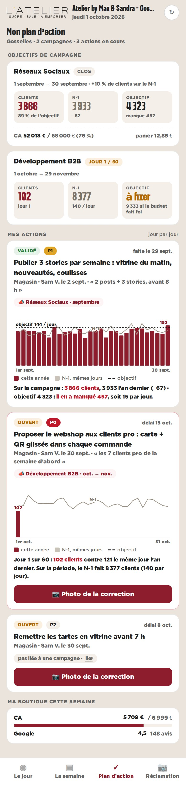
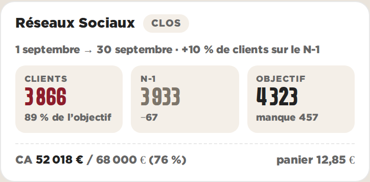
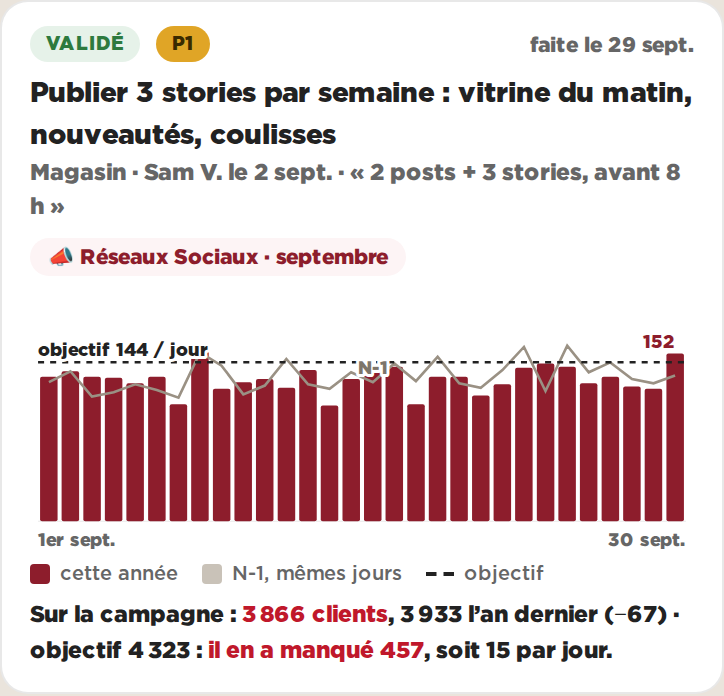

Plan d’action · objectifs de campagne · Gosselies · données réelles du 01/10/2026, actions en illustrationC — Les tuiles, le jour par jour
Trois tuiles par campagne (clients, N-1, objectif). Sur chaque action, les 30 jours : une barre par jour cette année, la ligne grise du N-1 aligné au même jour de semaine, l’objectif du jour en trait. C’est l’écran le plus proche de ce que vit le magasin.

Le plan d’action au téléphone (390 px)

La campagne de septembre

L’action liée à la campagne
Pour
- Le jour par jour parle au magasin : on y retrouve le marché, le dimanche, le lundi creux
- Le N-1 est aligné au même jour de semaine (−364 jours) : la comparaison est juste
- L’objectif par jour (144) est un chiffre qu’une équipe peut viser
- Les tuiles sont les plus légères des trois en-têtes
Contre
- 30 barres fines au téléphone : on lit la forme, pas chaque jour
- Sur 60 jours (octobre–novembre), il faut couper par mois
- Le total de la campagne n’est que dans les tuiles, pas sur le graphique